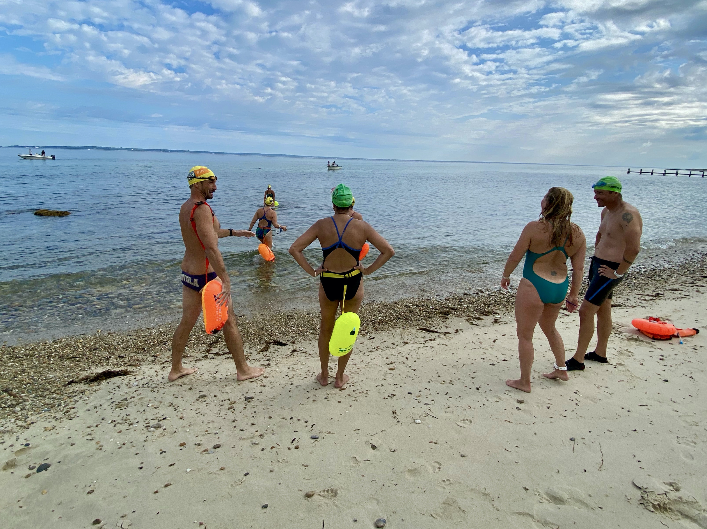
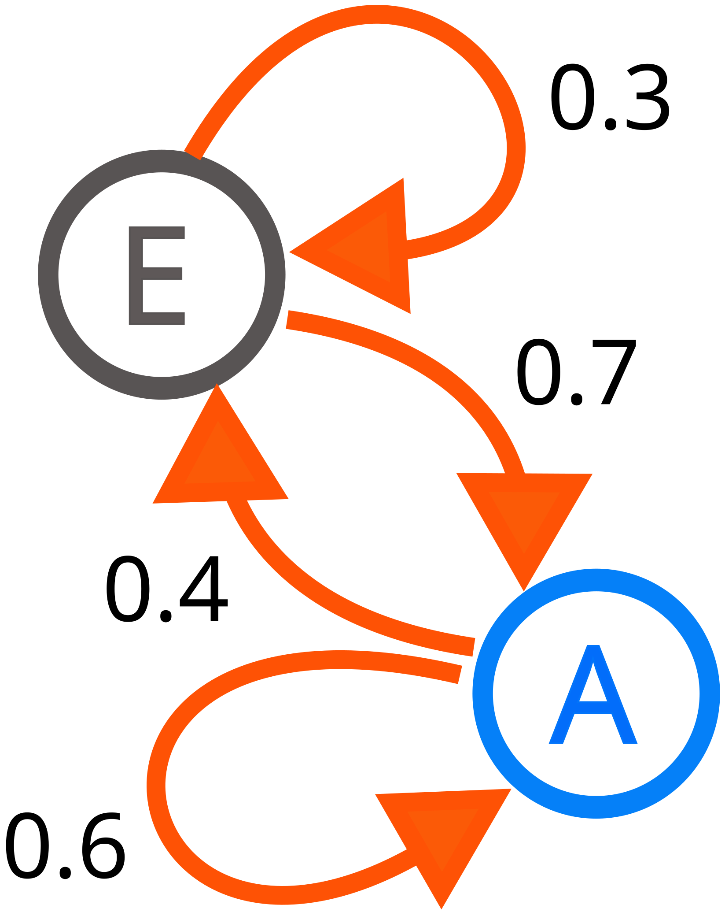
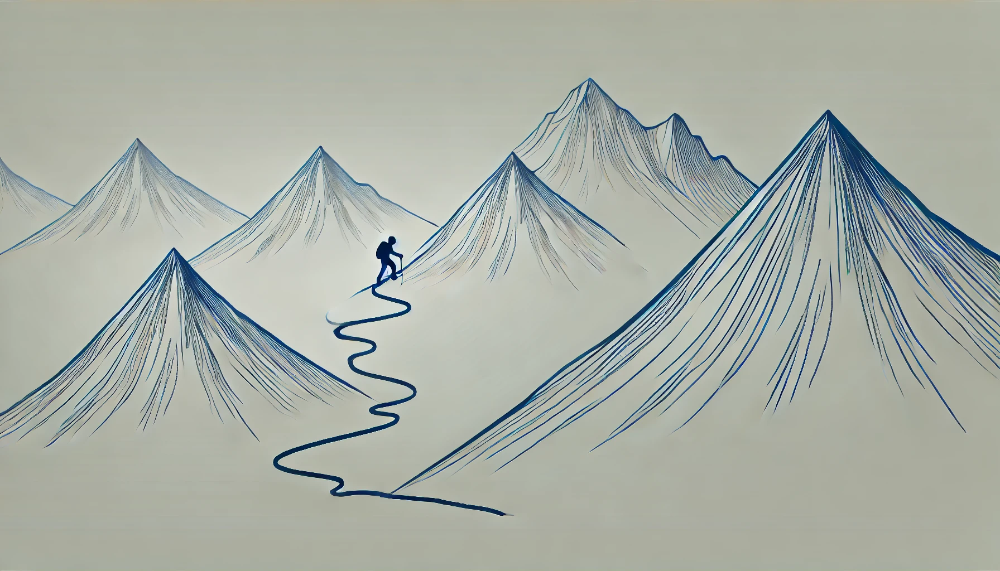
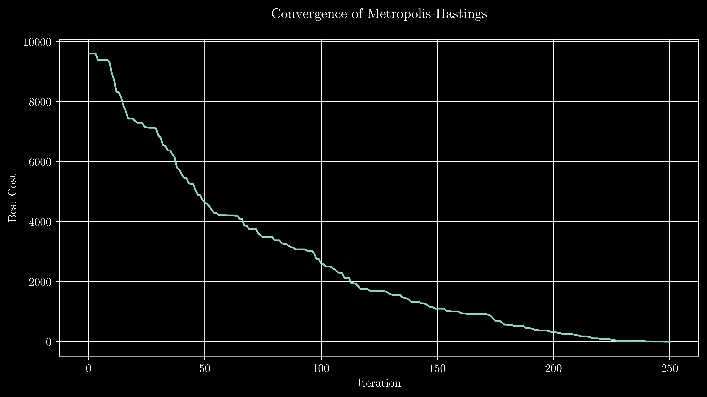
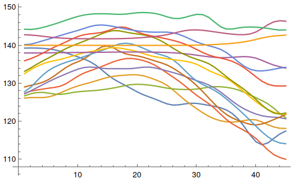
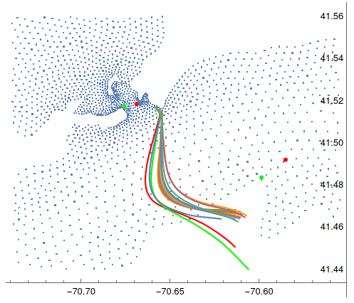
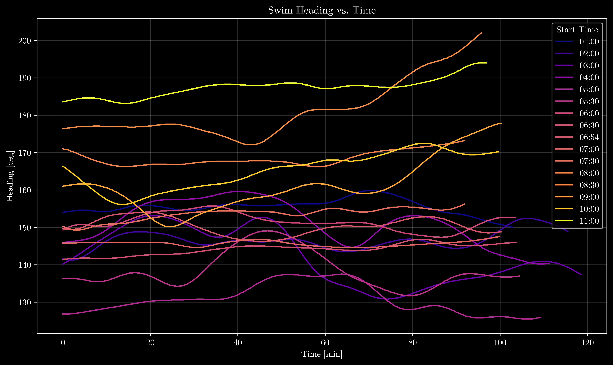
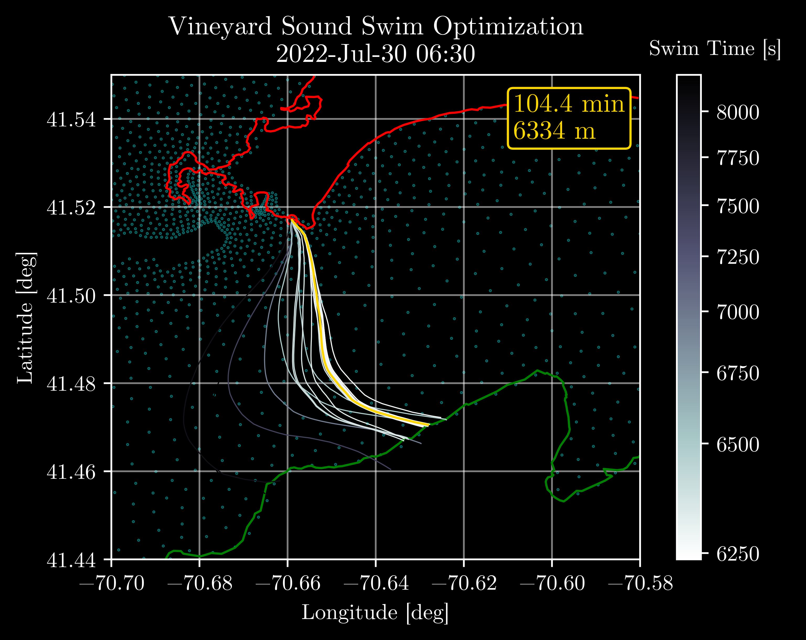
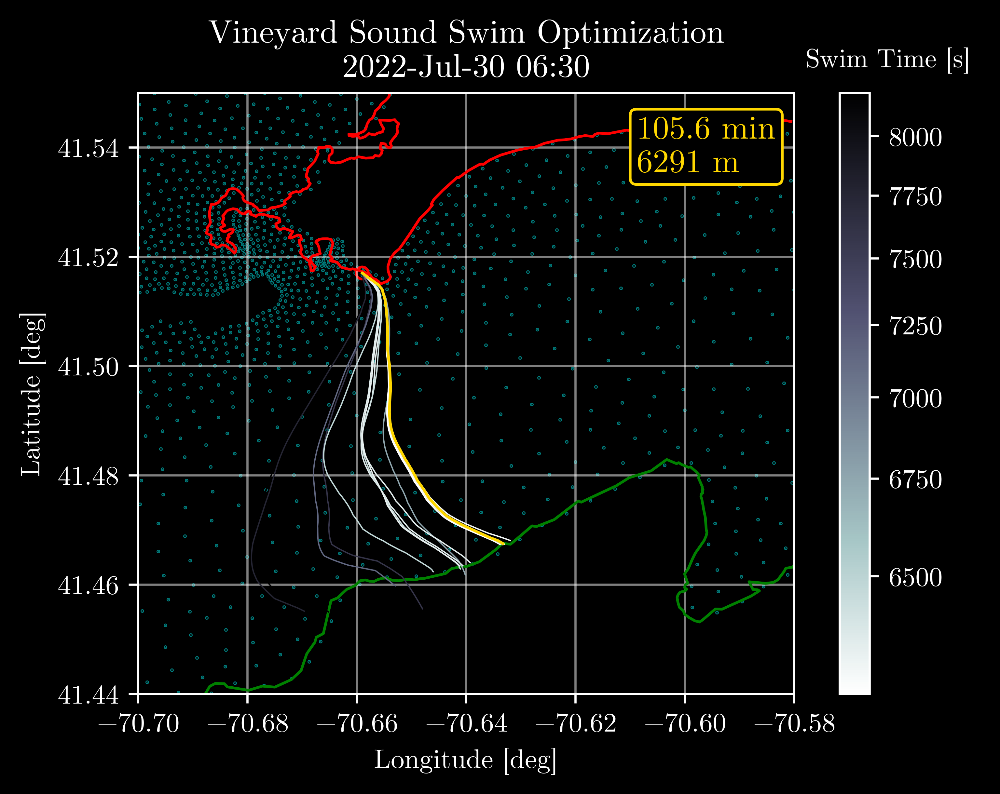
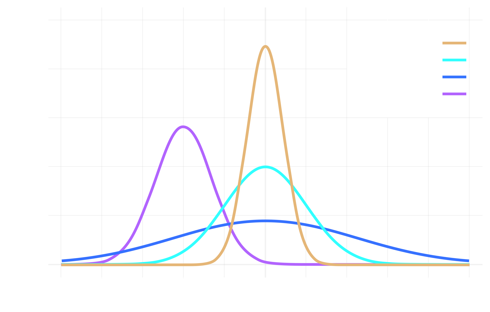

Open Water Swim Route Optimization Using Reversible Jump Markov Chain Monte Carlo (RJ-MCMC)
 Reversible Jump Markov Chain Monte Carlo is a stochastic, sampling-based optimization method that can explore parameter spaces of varying dimension by introducing or removing parameters while maintaining detailed balance.
Reversible Jump Markov Chain Monte Carlo is a stochastic, sampling-based optimization method that can explore parameter spaces of varying dimension by introducing or removing parameters while maintaining detailed balance.
Table of Contents
Should You Read This?
Life is short – there are mountains to climb, oceans to explore, TikTok reels to enjoy and forget about mere seconds later.
Continue reading if:
- You have contemplated swimming to Martha’s Vineyard, and want to know how it can be done optimally (in theory).*
- You want to learn about the history and implementation of Markov Chain Monte Carlo (MCMC) optimization methods.
- You need to optimize a system defined by an unknown number of parameters (sometimes this is called model selection). We will accomplish this task using a cool extension of MCMC called Reversible Jump MCMC (RJ-MCMC).
- You want to extend my RJ-MCMC repository on GitHub.
*Please don’t be an idiot. Be safe. Do your homework. Don’t get hit by a ferry.
Or, if you prefer legalese:
The content provided on this website/blog is for informational purposes only and does not constitute professional advice. While I strive to ensure accuracy, I make no representations or warranties regarding its completeness or applicability. Readers are solely responsible for how they use or interpret the information presented. I disclaim any liability for actions taken based on the content of this website.
Recapitulation
In August 2022, I published a lengthy blog post describing a very nerdy plan to swim across Vineyard Sound. As the crow flies, Martha’s Vineyard and Woods Hole are separated by only 3.3 miles; however, the sea separating these two landmasses is infamously tempestuous, with tidally-driven currents routinely exceeding 5 knots. My goal was to leverage NOAA’s ADvanced CIRCulation (ADCIRC) model to predict these currents, and determine a sensible combination of swim parameters – departure time, speed, and heading – that yielded reasonable trajectories across Vineyard Sound.

Specifically, I looked for solutions that were:
- Safe. The swim route must avoid ferry traffic.
- Timely. The swim must not exceed 2.5 hours, to avoid the strongest currents.
- Practical. The swimmer must arrive near the intended destination.
- Efficient. The swimmer should not fight the current, if possible.
My simple guess-and-check approach worked well enough – the swim was a success, and we arrived safely on shore near our intended destination, a little less than two hours after we departed. However, inquisitive minds soon began to wonder: “Could it have been done better?”
{kind=link}

Swimmers arriving on the shore of Martha’s Vineyard, near Lake Tashmoo.
Need for Speed
In the days and weeks after I published the original post, I received a great deal of positive feedback on my work, and was admittedly somewhat pleased with myself. I had used my brain to plan a logistically complex adventure which my body executed, and that felt very good. I was still indulgently basking in self-satisfaction when I received a message from my good friend and colleague, Casey Handmer, saying something along the lines of,
You should optimize the swim.
I knew he was right, but absolutely did not want to admit it. Admitting it would mean more work for me, and probably not just a little more – I suspected I would need to familiarize myself with some super fancy gradient-free, nonlinear, nonconvex optimization routine. At the time, I was already five years into my PhD program, and could feel the institutional pressure rising: I needed to defend my thesis soon, or risk being kicked out of the program. I bristled at Casey’s nonchalance, which seemed to suggest that this problem – which I didn’t even know how to structure – could be solved easily in an afternoon. Suppressing my indignation, I informed Casey that I wasn’t going to optimize the swim, and that I needed to focus on my doctoral research. He replied quickly, and asked me to send him the tidal current simulation data so that he could do it himself.
This is classic Casey Handmer. For those of you who do not know him, that sucks – he is certainly one of the most fascinating people I have ever met. He seems to crave technical problems like most people crave sweets or other sensory indulgences. A physicist named Stanislaw Ulam (more on him later) once remarked, “the mathematicians know a great deal about very little, and the physicists [know] very little about a great deal.” Casey knows basically everything about everything. At the age of 19, he traveled to Vietnam by himself, and hitchhiked through China and Russia before arriving in Italy; he speaks multiple languages, sings, and plays the trombone; when he isn’t riding his unicycle, he likes to fly airplanes or climb mountains; he also has a PhD in theoretical physics from Caltech, and founded Terraform Industries, a company which aims to mitigate climate change by synthesizing natural gas from sunlight and air. He is a caring husband and father of three, and yet still somehow finds time to crank out wide-ranging technical articles on a weekly basis. He is also Australian. Go figure.
{kind=link}
Casey Handmer, in the desert somewhere, presumably before he had children.
The rate at which Casey solves problems is astounding. This ability is rooted in an inclination to find first-order solutions quickly, and then decide whether higher fidelity approaches are warranted. All good engineers seem to operate this way. Not me. I frequently succumb to the siren song of complexity, and spend hours deliberating which state-of-the-art technique I’m going to use to solve a problem. This an ill-advised strategy: you could spend half a lifetime figuring out the best approach to a problem, and never get around to actually solving it. Plus, you can’t really know the best approach to a problem unless you have already solved it a few times (or talked to someone who has), so you might as well start with something simple – dare I say, something random. Such was Casey’s reasoning when he decided to utilize a relatively simple stochastic methodology to determine the best possible swim route from Woods Hole to Martha’s Vineyard.
Markov Chain Monte Carlo
There is power in randomness – this is the fundamental premise of so-called Monte Carlo methods. How can this be? Randomness is inherently chaotic, and chaos is bad, right? Isn’t the foremost goal of science and engineering to distill order from chaos?
Sort of. Another way to think about randomness is as means of observing reality in an unbiased manner. Imagine being a journalist who is told to write an article about one of ten equally important subjects – how should they choose which one to cover? It obviously wouldn’t be fair if they simply picked their favorite topic, so instead, they might randomly select one of the subjects. By doing so, they ensure that each subject is treated with equal importance, free from any personal bias. This randomness introduces fairness into the process, enabling a more objective approach to gathering information. In much the same way, Monte Carlo methods use randomness to explore possible solutions to a problem, systematically sampling different outcomes to estimate the most likely result (or discover the best solution). While it may seem counterintuitive, this stochastic process can be surprisingly powerful, as it allows us to explore a broad range of scenarios and capture complex behaviors that deterministic methods might miss.
History
Monte Carlo methods trace their origins to the 1940s, when they were developed as part of the Manhattan Project to aid in the design of nuclear weapons. Pioneered by scientists such as Stanislaw Ulam and John von Neumann, these methods were used to model complex physical processes, including neutron diffusion in fusion reactions. The fundamental idea was to use random sampling to approximate solutions to otherwise intractable mathematical problems, leveraging the power of early computers to perform large-scale simulations. The name Monte Carlo was inspired by the famous casino in Monaco, reflecting the role of chance in the method.
].](mc_pi_estimation.png)
A canoncial demonstration of the Monte Carlo approach involves the estimation of $\pi$ without geometrical relationships. As points are randomly scattered inside a unit square, some fall within an inscribed unit circle, and some do not; as the number of points approaches infinity, the fraction of points that land inside the circle approaches $\pi/4$ [source: Iván Mauricio Cely Toro].
A major advance came in the 1950s with the introduction of the Metropolis algorithm by Nicholas Metropolis and his colleagues Marshall Rosenbluth, Arianna Rosenbluth, Augusta Teller, and Edward Teller at Los Alamos National Laboratory. This method combined Monte Carlo techniques with the mathematics of Markov Chains – theoretical frameworks that describe sequences of possible events in which the probability of each event depends only on the state attained in the previous event, not the full history. This memoryless property of Markov Chains makes them especially useful for exploring complex parameter spaces in a controlled (yet random) fashion. In the Metropolis algorithm, a Markov Chain is constructed in such a way that, over time, it produces samples from a desired probability distribution – or, equivalently, yields a set of parameters that minimizes a cost function (more on this equivalency in the Algorithm section).
Why would anyone want to do this? Well, in short, there quite a few ways in which nuclear fusion does not happen, and Nicholas Metropolis and his colleagues wanted very badly for it to happen. I would say more, but that’s literally all I know, and even if I did know more, I probably wouldn’t say more – apologies in advance to Iran, South Korea, and Saudi Arabia.
{kind=link}

A diagram representing a two-state Markov process. The numbers are the probability of changing from one state to another state [source: Wikipedia Commons].
The Metropolis algorithm was later generalized by W.K. Hastings in 1970, resulting in the Metropolis-Hastings algorithm, a flexible and widely-used approach that underpins modern Markov Chain Monte Carlo (MCMC) techniques. By using carefully designed Markov Chains to guide random sampling, MCMC methods are able to efficiently explore high-dimensional solution spaces.
Reversible Jump MCMC (RJ-MCMC) is an extension of traditional MCMC methods, developed by Peter J. Green in 1995. Standard MCMC methods like Metropolis–Hastings typically operate in parameter spaces with a fixed dimension – that is, the number of parameters doesn’t change during optimization. In contrast, RJ-MCMC introduces special moves that alter the dimension of the parameter space by dynamically adding or removing parameters (effectively “jumping” between models with different complexities). This flexibility makes RJ-MCMC ideal for problems where the best number of parameters (like the optimal number of discrete swim headings) is not known ahead of time.
Algorithm
If you haven’t taken a probability course in a while (or even if you have), you might get bogged down in the mathematical language used to describe the Metropolis-Hastings algorithm. If you peruse its Wikipedia page, you will find no shortage of obscure remarks that assume considerable familiarity with probability theory:
The Metropolis–Hastings algorithm can draw samples from any probability distribution with probability density $P(x)$, provided that we know a function $f(x)$ proportional to the density $P$ and the values of $f(x)$ can be calculated.
What?
How does that relate to optimization?
I wondered the same thing at first – do not dismay.
The Metropolis–Hastings algorithm was originally developed to approximate probability distributions by generating a sequence of samples such that, after many iterations, the frequency of samples at any point, $x$, approximates the probability density, $P(x)$.
Very clever people eventually figured out that this same method could be used to minimize a cost function by defining a target probability distribution that preferentially selects good solutions, and rejects bad ones. Suppose you have a cost function, $C(x),$ that you want to minimize. You could then define a target probability distribution, $P(x)$, where solutions with lower costs have higher probabilities:
$$ P(x) \propto e^{-\beta C(x)}, $$where $\beta$ is a positive (inverse cooling) parameter controlling the sharpness of the distribution. If you run the Metropolis–Hastings algorithm with this distribution, the generated “samples” – which represent sets of parameters, $x$, in this instance – will preferentially come from low-cost regions of the parameter space, because these samples have a higher probability of being selected.
If none of that made sense to you, that’s okay – I have great news: the Metropolis–Hastings algorithm is shockingly easy to implement, even if you do not fully understand the underlying theory. This means you (yes, you!) can optimize all sorts of cool things in your life.
These are the key steps:
- Define a cost function to evaluate the quality of a prospective solution.
- Propose an initial solution, and compute its cost.
- Introduce a random perturbation to the previous solution, and compute the new cost.
- If the perturbation results in a lower cost, accept the solution.
- If the perturbation results in a higher cost, accept the solution with probability $\alpha$, where $\alpha$ is an acceptance probability that depends on the difference between the previous cost and the current cost. The acceptance probability can be systematically adjusted over time (this is called simulated annealing).
- If the perturbation results in the lowest cost thus far, store the solution.
- Repeat Step 3 until a convergence criterion (or iteration limit) is met.
Or, if you’re more of a flowchart kind of person:
Why periodically accept worse (higher cost) solutions?
Imagine you are hiking in the mountains on a foggy day, searching for the highest peak. If you simply climb upwards at every step, you might find yourself atop a small hill and assume you’ve reached the highest point (these little hilltops are called a local maxima or local extrema in nerd speak). In order to locate the highest peak – the global maximum – you might need to occasionally descend to lower elevations, even if it seems counterproductive in the moment.
{kind=link}

Sometimes you have to go lower to get higher [source: DALL-E 16.20.12].
To me, the fact that this algorithm actually works (most of the time) is nothing short of astounding – it is basically “guess-and-check” on steroids. And yet, despite its simplicity, this technique has revolutionized the fields of nuclear physics, economics, genetics, and climate science, just to name a few. It also paved the way for modern machine learning techniques. The power of this approach cannot be attributed to luck or magic; it is underwritten by randomness, and the properties inherent thereto.
Python Demo
Below is a simple, fully-functional 1-D implementation of the Metropolis–Hastings algorithm. Feel free to download it, and modify it as you see fit. I would encourage you to play around with the initial guess (initial) and standard deviation (proposal_std) parameters to get a sense of how these influence solution convergence.
import random
import math
import matplotlib.pyplot as plt
def metropolis_hastings(cost_func, initial, iterations, proposal_std):
"""
Metropolis-Hastings algorithm for cost function minimization.
Args:
cost_func: The cost function to minimize. It should take a single parameter.
initial: Initial value for the parameter.
iterations: Number of iterations to run.
proposal_std: Standard deviation of the Gaussian proposal distribution.
Returns:
A tuple (best, best_cost, samples) where:
- best is the best found parameter value.
- best_cost is the corresponding cost.
- samples is a list of the parameter values over the iterations.
"""
current = initial
current_cost = cost_func(current)
best = current
best_cost = current_cost
samples = [current]
best_cost_history = [best_cost]
for i in range(iterations):
# Propose a new candidate using a Gaussian random step.
candidate = current + random.gauss(0, proposal_std)
candidate_cost = cost_func(candidate)
# Calculate acceptance probability.
# For minimization, lower cost is better.
# If the candidate cost is lower, accept it outright.
# Otherwise, accept it with probability exp(-(candidate_cost - current_cost)).
if candidate_cost < current_cost:
accept = True
else:
accept_prob = math.exp(-(candidate_cost - current_cost))
accept = random.random() < accept_prob
if accept:
current = candidate
current_cost = candidate_cost
# Update best if the new candidate is better.
if candidate_cost < best_cost:
best = candidate
best_cost = candidate_cost
samples.append(current)
best_cost_history.append(best_cost)
return best, best_cost, samples, best_cost_history
# Example usage
if __name__ == '__main__':
# Define a simple cost function, e.g., a parabola with a minimum at x = 2.
def cost(x):
return (x - 2) ** 2
# Run the Metropolis-Hastings algorithm.
best, best_cost, samples, best_cost_history = metropolis_hastings(cost_func=cost,
initial=100, # Starting value
iterations=250, # Number of iterations
proposal_std=1.0) # Step size
print(f"Best x found: {best:.5f}")
print(f"Cost at best x: {best_cost:.8f}")
# Plot convergence: best cost over iterations.
plt.figure(figsize=(10, 5))
plt.plot(best_cost_history)
plt.xlabel("Iteration")
plt.ylabel("Best Cost")
plt.title("Convergence of Metropolis-Hastings\n")
plt.grid(True)
plt.show()
If you run the code as is, you should find that the optimizer rapidly finds the smallest value of the cost function $C(x) = (x-2)^2$ at…
…drumroll, please…
$x=2$.
Even for an absurd initial guess like $x_0 = 100$, the Metropolis-Hastings algorithm converges to the true solution in about 250 iterations.
{kind=link}

Convergence of the Metropolis-Hastings algorithm for $C(x) = (x-2)^2$, with $x_0 = 100$.
This is a fun example, but it really doesn’t demonstrate the true power of this technique; after all, this trivial problem can be solved using basic calculus. What makes the MCMC approach so fascinating is its generality: it can explore parameter spaces of varying dimension, and the cost function need not be differentiable or continuous.
Problem Setup
Goal
Depart Nobska Beach between 2:00a and 11:00a on July 30th, 2022 and cross Vineyard Sound as fast as possible.
Constraints
None. We’re prioritizing speed, and speed alone – ferries, ruffled feathers, and private beaches be damned (especially the private beaches, those can go straight to hell). Any heading sequence that delivers the swimmer to Martha’s Vineyard is on the table.
Assumptions
- We assume the swimmer is able to maintain a constant pace of 1:40/100yd. This is a reasonable pace for an average open water swimmer in good shape.
- We assume the swimmer departs from a fixed location on Nobska Beach, MA, sometime between 2:00a and 11:00a on July 20th, 2022.
Parameters
- Heading Sequence: Each heading is pursued for a fixed time interval, $\Delta t;$ the total number of heading changes is not known in advance.
- Start Time: This parameter determines the state of the tidal current vector field during the simulated swim, and thus exerts a strong influence on the crossing time and optimal heading sequence.
Methodology
-
Define swim constants:
- Departure location
- Start time
- Time step
-
Define optimization constants:
- Initial annealing temperature
- Initial Gaussian bump amplitude limit
- Number of iterations
-
Determine a reasonable initial guess.
- Simulate a series of constant-heading swims.
- Store the solutions which produce valid trajectories (i.e., those that reach Martha’s Vineyard in under 3 hours).
- Pick the fastest valid constant-heading solution as the initial guess.
- Compute the cost (swim duration) of the initial guess.
-
Randomly choose whether to modify, grow, or shrink the heading vector, using the following logic:
pb = 0.33 pd = 0.33 pm = 0.34 move_type = np.random.choice(['birth', 'death', 'modify'], p=[pb, pd, pm]) if move_type == 'modify' and len(new_h) > 0: perturbation = generate_bump(new_h, bump_size) new_h += perturbation elif move_type == 'birth': new_heading = np.random.normal(birth_bearing, 20.0) insert_idx = len(new_h) new_h = np.insert(new_h, insert_idx, new_heading) elif move_type == 'death' and len(new_h) > 1: idx = len(new_h)-1 removed_heading = new_h[idx] new_h = np.delete(new_h, idx)The
bump_sizeparameter is typically set between 5 and 15 degrees at the outset, depending on the user’s confidence in their first guess, and reduced $0.1\%$ after every iteration; this allows the optimization routine to conduct a thorough exploration of the parameter space early on, and then refine the solution using smaller perturbations. The use of a larger initialbump_sizeresults in very robust performance, but can sometimes yield sub-optimal solutions; conversely, the use of a smaller initialbump_sizeworks better if the initial guess is already pretty good, such that the odds of getting trapped in a local minimum are small. This function is described in greater detail in the Flourishes section. -
Compute the cost of the candidate solution.
-
Compute the acceptance probability: $\alpha_k = \exp{\left( \frac{\Delta_k}{T_k} \right)}$, where $\Delta_k = C(x_k) - C(x_{k-1})$ is the cost difference between the candidate and previous solutions, and $T_k$ is the annealing temperature parameter. We reduce $T_k$ gradually over time using a linear cooling schedule to discourage premature convergence.
-
Keep the candidate solution if BOTH the following conditions are met:
- EITHER the candidate cost is lower than the previous cost, $C(x_k) < C(x_{k-1})$, OR the acceptance probability, $\alpha_k$, is greater than a random number drawn from a uniform distribution, $\mathcal{U}(0,1)$.
- The swim trajectory terminates inside the boundary of Martha’s Vineyard.
-
If the candidate solution is the lowest-cost solution yet, store it.
-
If the iteration limit has not been reached, return to Step 4.
Useful Functions
-
Flowfield Interpolation: Extract a tidal current vector from the discrete computational domain using SciPy’s
NearestNDInterpolatorfunction. I also experimented with theLinearNDInterpolatorfunction, but the minor fidelity improvement did not justify the enormous (roughly $1000x$) increase* in computational cost. -
Dead Reckon: Given a starting point (lon, lat), initial bearing (in degrees), and a distance (in meters), compute the destination point along a great-circle path using a modified form of the Haversine formula (note: if you like geodesy, check out my proof of this relationship). This function permits the simulation of swim trajectories knowing only a starting point, a set of sequential headings, and the swimmer’s speed over ground.
-
Arrival Detection: Given a point (lon, lat) and a list of points describing a closed region, determine whether the point is inside the closed region using the ray casting algorithm. This function is used to determine whether a given sequence of headings produces a swim trajectory that reaches Martha’s Vineyard.
-
Closest Approach (Optional): Compute the closest distance (in meters), and the bearing (in degrees), from a geodetic point (lon, lat) to a closed polygon defined as a (Nx2) NumPy ndarray of (lon, lat) points, using vectorized geodetic functions. Although this function is not strictly necessary, it was useful when I was debugging my optimization routine.
*You may have found this surprising. How could simple linear interpolation incur such an immense computational burden? Here’s how: SciPy’s LinearNDInterpolator works by first creating a Delaunay triangulation structure, and then iterating over the entire structure for every evaluation. Consequently, the lookup time scales poorly with the number of points: $\mathcal{O}(N~log(N))$ for construction, and $\mathcal{O}(N)$ per query. Conversely, NearestNDInterpolator uses a k-d tree to efficiently partition space for nearest-neighbor searches, reducing the lookup time to $\mathcal{O}(log(N))$ per query.
Results
Before I present my own solutions, I’d like to show Casey’s work. His results aren’t quite as polished as mine, but he probably cranked them out in about the same time I spent formatting one of my plots (that being said, I wholeheartedly believe that data visualization is important, beauty is important, and making good plots is worth the time and effort; I will die on this hill). Further, Casey’s findings were compelling enough to inspire me to write my own MCMC code, and publish this blog.
Casey’s Solution
Shortly after I sent Casey my tide simulation data, I received the following email:
Finally getting around to shooting you this info.
I relaxed the constraint that the headings be constant to see if it was possible to find a faster routing. I coded a function that would (quickly) attempt to find an optimal sequence of headings as a function of
- departure location and time
- arrival location
- minimizing time in the ferry zone
- pace together with an interpolated background dataset of known (simulated) current flows.
This graph shows an example output, with headings in degrees as a function of time (units in multiples of 3 minutes). For a particular combination of start time and pace, close to 140 degrees the whole way is adequate, as shown with the orange line. Leaving earlier or later, favors different headings to take advantage of the water speed.
{kind=link}

This ground track shows, as a function of latitude and longitude in degrees, the ground tracks corresponding to the curves above. The bright green and red are baselines premised on 140 degree headings the whole time, while the colored red and green dots demarcate the boundaries of the ferry zone. Blue dots show the grid on which tide current values are known with certainty, and hence an inference of the shoreline location. Not every start time converged to the desired landing point but most of them did.
{kind=link}

The time saved compared to 140 degrees baseline varied between 5 and 20 minutes, some of which could be attributed to reducing the overall distance needed to be covered. Fortunately Martha’s Vineyard has a big beachy coast which is hard to miss!
Compared to Blake and friends’ actual swim, the solutions are about 20-30 minutes faster. I think this is probably because the simulated swimmers routed close to the shore on departure, waiting until they were in strong current before zooming across the ferry zone. Blake’s strategy to swim directly across the zone in still water meant their group took longer to get into the faster water.
This optimization effort was very hacky, and I’m sure there’s another 3-5 minutes of performance to be squeezed out with concerted effort.
Casey
I have a few thoughts on this.
First, nice.
I think the coolest part of Casey’s work is actually hiding behind the figures: it is his Gaussian bump feature. Extremely clever. I initially tried to run my optimization algorithm without it, and the results were nightmarish: the heading vector was perturbed every which way, yielding a chaotic, jagged swim trajectory. Casey realized that such drastic changes in sequential headings were counterproductive, and developed a representation that encoded this knowledge. The result? Gorgeously smooth solutions, and much faster convergence. Bravo!
Casey’s results are quick-and-dirty but credible. It makes sense that earlier departures – which subject the swimmer to stronger westward currents – would necessitate a course adjustment to the east. Plus, given that my initial analysis suggested that a constant $140^{\circ}$ heading was a reasonably efficient solution (i.e., the dot product of current velocity and swimmer velocity is nonnegative at nearly every timestep), we wouldn’t expect the optimal solution to be dramatically different.
I also thought it was cool that he was able to modify the cost function to penalize solutions that spent too much time in the ferry channel, and arrived too far from Lake Tashmoo.
Tinkering with the cost function sometimes leads to unexpected behavior. Early on, I was using a composite cost function that combined swim_time and distance_from_shore as a weighted sum, hoping this would guide the optimization routine toward solutions that were both fast and reached the shoreline. However, I soon found that the routine often prioritized a smaller value of swim_time over the necessary (but as-of-yet unenforced) condition that distance_from_shore = 0. I initially rectified this issue by tuning the cost function weights, but I hated this solution – it felt flimsy. So, I eventually figured out a way to reject invalid solutions, and remove distance_from_shore from the cost function.
I think Casey would be the first to admit that there is room for improvement here (from the horse’s mouth: “This optimization effort was very hacky”).
He didn’t digitize the shoreline of Martha’s Vineyard, so I’m guessing his arrival detection function might have introduced errors on the order of a few minutes. Practically speaking, this isn’t a big deal; however, I found that optimization generally only improves the initial guess by a few minutes, so an error of this magnitude is problematic.
Finally, I think a good chunk of the “20-30 minute improvement” Casey referenced could be explained by the fact that we took a 10-minute break in the middle of Vineyard Sound to chat, hydrate, and eat snacks. But, I don’t think he knew about this, and thus cannot be blamed for pointing his hypotheses elsewhere. I agree with his general contention that swimming south into stronger currents before crossing the ferry channel may have reduced our total swim time – but not by 30 minutes.
My Solution
My approach improves on Casey’s in a number of ways:
-
Reversible Jump MCMC: Rather than assuming a fixed number of headings, my approach allows the heading vector to shrink and grow as necessary. You can imagine the tip of the swim trajectory rapidly bouncing around the shoreline, probing different solutions like some sort of disgusting proboscis.
-
Pre-optimization: Prior to firing up the main optimization engine, I conduct an automated sweep of constant-heading simulations, keeping track of the ones that reach Martha’s Vineyard, and pick the fastest solution as my first guess. Surprisingly, this very dumb technique produced solutions that were only a few minutes slower than the final optimized solutions.
-
Enhanced arrival detection: I use ray casting to determine if swim trajectories terminate inside the digitized boundary of Martha’s Vineyard.
-
Better temporal resolution: I reduced the simulation timestep from $\Delta t = 3 min$ to $\Delta t = 18 s$. Without the use of a smaller timestep, the optimizer will reject candidate solutions unless they yield at least a $2.99 min$ reduction in swim time.
-
Exponentially-cooled Gaussian bump: Rather than selecting the amplitude of each Gaussian bump from a uniform distribution with fixed bounds, I allow the bounds to shrink over time. This enhancement yielded a dramatic improvement in both solver robustness and solution quality.
-
Linearly-cooled annealing temperature: The use of a linear cooling schedule resulted in a reasonable reduction in the acceptance probability over time. This feature worked in conjunction with the exponentially-cooled Gaussian bump to improve convergence.
-
Pretty dark plots: Who doesn’t like dark plots?
Optimal Trajectories
In the following plots, the pre-optimization (i.e., constant-heading) solutions are shown as grayscale lines, with a corresponding colorbar showing the total swim time in minutes. The final, optimized swim trajectory is shown in yellow, and the textbox in the upper righthand corner shows the optimized swim distance and time.
Without further ado, here are the results you presumably came here for.


Assuming a constant swim pace of 1:40/100yd, and no concerns about getting maimed by a ferry…
These plots reveal another interesting fact: constant-heading solutions are actually pretty good. Most of the time, the optimal trajectory sticks pretty close to at least one constant-heading trajectory. So, unless you’re really determined to shave a few minutes off your swim, using a constant-heading strategy is totally fine.
Optimal Heading Sequences
{kind=link}

Despite the fact that both 7:30a and 8:00a starts enable an optimal crossing, the required corresponding heading sequences couldn’t be more different! While a 7:30a start requires a sequence of headings that varies between $150^{\circ}-155^{\circ}$, an 8:00a start requires a sequence of headings that hovers around $170^{\circ}$. What’s going on?
By this time in the morning, the tidal current is absolutely ripping from west to east (check out the tidal current gif). By starting later, you’re effectively getting all the longitudinal velocity you could possible hope for, and more, for free – your only option is to swim due south, and hope you make it to the beach before you get ripped around the tip of West Chop. Good luck!
Probably a good time to reiterate my initial caveat: this would be an insanely high-risk strategy in practice, and is not recommended. By the time the tidal current is this strong, swimming across Middle Ground would be dangerous, if not impossible.
Convergence
I wanted to display a few figures that highlight the robust convergence properties of this optimization routine. In the following two figures, the grayscale lines represent the in-progress solution every 100 iterations, with a corresponding colorbar displaying the total swim time in seconds. The optimized solution is shown in yellow, and the textbox in the upper righthand corner shows the optimized swim distance and time.
{kind=link}

Illustration of solver robustness: convergence is achieved despite poorly chosen initial conditions.
I ran this optimization shortly after I applied an exponential cooling schedule to the bump_size parameter, and was shocked by how well it worked – the resulting solutions were almost entirely insensitive to initial conditions. In other words, the optimization procedure was robust. Knowing in advance that the optimal heading vector hovered around $135^{\circ}$ for this start time, I decided to push my luck and use a $180^{\circ}$ constant-heading solution as my initial guess.
Uncalled for. Pathological.
Nevertheless, the optimization routine quickly honed in on the correct solution. I was so proud that it didn’t get mired in the morass of bullshit to which it was intentionally subjected – now I understand why the Boston Dynamics engineers are so mean to their robots.
On to the next!
{kind=link}

Illustration of solver ability to escape local minima.
This particular optimization attempt did not yield the best solution – note that the simulated swim lasted 1.5 minutes longer than the optimal solution for a 6:30a start – but I liked how it again demonstrated robustness, and an ability to escape local minima. Look at how the solution periodically becomes stuck in local minima, before jumping to better solutions.
Incredible!
We love it.
Reflections
Ultimately, this was a highly academic exercise. Maybe this sort of thing makes sense if you’re a professional athlete or a Navy SEAL with a head-up display in your goggles, but otherwise you’re better off sticking with a constant-heading strategy. During the actual swim, it was challenging enough to follow a single fixed heading with any appreciable degree of confidence – the notion that a swimmer might be able to make sub-degree alterations to their bearing every eighteen seconds is laughable.
But, on the other hand… pretty cool, right?
It is often said (by lunatics, mostly) that there are many ways to skin a cat; likewise, I am confident that there are other, perhaps better, ways to approach this problem. But, then again, there are so many cats, and so little time.
Feel free to reach out if you have any questions, comments, or want to collaborate on a cool project.
Thanks for reading.
Flourishes
Gaussian Bump
A common and straightforward method for proposing new candidate solutions in MCMC optimization involves directly perturbing the parameter vector with random noise. For instance, one typically selects a random index from the parameter vector and adds a small perturbation drawn from a Gaussian distribution with zero mean and a chosen standard deviation. A Python implementation of this approach might look like this:
proposal_std = 1.0
idx = np.random.randint(len(old_soln))
perturbation = np.random.normal(0, proposal_std)
new_soln[idx] = old_soln + perturbation
Although easy to implement, this method tends to produce isolated, incremental changes, potentially limiting the ability of the algorithm to explore broader variations in the solution space efficiently. We can often leverage domain-specific expertise to modify the proposal step, and drastically improve both the convergence rate and quality of the resulting solutions. For instance, when optimizing a swim route, we can be fairly confident that swimmer heading will not change abruptly, and can modify our proposals accordingly.
Rather than simply adding random noise to the swimmer heading vector, we can preserve smoothness by adding a Gaussian bump. The Gaussian bump is characterized by three randomly selected parameters: the center (index in the heading vector), the width (extent of the perturbation along the heading vector), and the amplitude (magnitude and direction of the perturbation).
{kind=link}

An set of Gaussian functions with varying center (i.e. mean), width (i.e. variance), and amplitude [source: Wikimedia Commons].
By adjusting these parameters randomly within carefully chosen ranges, the function introduces controlled yet diverse variability, allowing the optimization routine to explore different route possibilities without creating unrealistic or overly abrupt path changes. A Python implementation of the Gaussian bump might look like this:
def generate_bump(headings, bump_size=1.0):
# Random center in [-0.2, 1.2]
center = np.random.uniform(-0.2, 1.2)
# Random width: generate log-width uniformly between log(0.05) and log(1), then exponentiate
log_width = np.random.uniform(np.log(0.05), np.log(1.0))
width = np.exp(log_width)
# Random amplitude in [-bump_size, bump_size]
amplitude = np.random.uniform(-bump_size, bump_size)
# Create sample points: the number of points equals the length of headings
n_points = len(headings)
x_vals = np.linspace(0, 1, n_points)
# Evaluate the Gaussian bump at each sample point
bump = amplitude * np.exp(-((x_vals - center) ** 2) / (width ** 2))
return bump
To enhance convergence toward an optimal solution, the amplitude range of these perturbations – controlled by the parameter bump_size – is reduced after each iteration (e.g., using bump_size *= 0.999 in the optimization loop). Initially, larger perturbations encourage exploration across a broad set of candidate solutions, preventing premature convergence on local minima. As the optimization progresses, decreasing bump_size narrows the search area, transitioning from broad exploration toward refined, localized adjustments. This adaptive strategy balances efficient global exploration with precise local optimization, resulting in a systematically improved swim trajectory.
I was honestly shocked at how well this worked. Initially, I was using a fixed value of bump_size = 3.0 (units: degrees), and found that the final solution was highly dependent on the initial guess. The Gaussian bump technique, with exponential cooling, yielded a much more robust solver capable of converging to the global optimum, almost regardless of the initial guess.
Simulated Annealing
Generally speaking, simulated annealing is a technique used to gradually reduce the rate of change experienced by a system over time; indeed, its name was inspired by the physical process of slowly cooling molten metal to achieve a stable crystal structure. In the context of optimization, it involves slowly decreasing a temperature parameter to control the acceptance probability of proposed solutions. In the Metropolis-Hastings algorithm, the acceptance probability is typically computed in the following way:
$$ \alpha_k = \exp{\left( \frac{\Delta_k}{T_k} \right)} $$where $T_k$ is the temperature parameter, and $\Delta_k = C(x_k) - C(x_{k-1})$ is the difference between the new and old solution costs. For simple problems (as in the Python Demo provided above), it is often sufficient to simply set $T=1$; however, by allowing the temperature parameter to gradually decrease over time, we can achieve both broad exploration early in the optimization process, and focused exploitation and refinement as convergence progresses.
The temperature parameter is often reduced according to a predefined cooling schedule, a few of which will be outlined here:
Exponential
This is likely the most widely-used cooling method, due to its simplicity and effectiveness:
$$ T_k = \beta T_{k-1} $$
where $T_k$ is the temperature at iteration $k$, and $\beta$ is a constant slightly less than $1$ (typically $0.80 \leq \beta \leq 0.99$), controlling how rapidly temperature decreases. However, it should be noted that exponential decay reduces the temperature proportionally each step, leading to a rapid reduction in temperature early on, quickly suppressing exploration. I found that this cooling technique resulted in an overly-aggressive reduction of the acceptance probability, even when I set $\beta$ very close to $1$; however, this approach was perfectly suited to the bump_size parameter, which controls the maximum amplitude of Gaussian bump perturbations.
Linear
This is straightforward method that is useful when the number of iterations, $N$, is known in advance. Linear cooling reduces temperature at a constant rate rather than proportionally:
$$ T_k = T_{k-1} - \Delta T, \qquad \Delta T = \frac{T_0 - T_{final}}{N} $$This method is arguably simpler to implement, but less flexible since it requires knowing the final iteration count in advance. It also results in much slower cooling, which was more appropriate for my application.